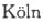
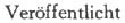

文献索引
卡·马克思和弗·恩格斯的著作
卡·马克思
《雇佣劳动与资本》，载于1849年4月5、6、7、8、11日《新莱茵报》（科隆）第264、265、266、267、269号（Lohnarbeit und Kapital.In：Neue Rheinische Zeitung..Nr.264，5.April 1849；Nr.265，6.April 1849；Nr.266，7.April 1849； Nr.267，8.April 1849；Nr.269，11.April 1849）。——667、709、878。
《国际工人协会成立宣言和临时章程。协会于1864年9月28日在伦敦朗-爱克街圣马丁堂举行的公开大会上成立》1864年［伦敦版］（Address and Provisional Rules of the Working Men’s International Association，established September 28，1864，at a public meeting held at St.Martin’s Hall，Long Acre，London.［London］1864）。——38。
《路易·波拿巴的雾月十八日》1869年汉堡第2版（Der achtzehnte Brumaire des Louis Bonaparte.2.Ausg.Hamburg 1869）。——798。
《哲学的贫困。答蒲鲁东先生的〈贫困的哲学〉》1847年巴黎—布鲁塞尔版（Misère de la philosophie.Réponse à la Philosophie de la misère de M. Proudhon.Paris，Bruxelles 1847）。——99、413、416、419、483、616、744。
《政治经济学批判》1859年柏林版第1分册（Zur Kritik der politischen Oekonomie.H.l.Berlin 1859）。——7、14、16、20、47、53、55、94—95、100、106、108、115—117、121、136、145、146、160、162、167、168、192、225、618、716。
《致〈人民国家报〉编辑部》，载于1872年6月1日《人民国家报》（莱比锡）第44号（An die Redaktion des“Volksstaat”.In：Der Volksstaat.Leipzig.Nr.44，1. Juni 1872）。——38。
《致〈人民国家报〉编辑部》，载于1872年8月7日《人民国家报》（莱比锡）第63号（An die Redaktion des“Volksstaat”.In：Der Volksstaat.Leipzig.Nr.63，7. August 1872）。——41。
《资本论（1863—1865年经济学手稿）》第3册（Das Kapital〈Manuskript 1863—1865〉.Drittes Buch）。——249、254、378、491、519、553、598、652、682、819。
《资本论》，约·鲁瓦先生译，全文由作者校阅，［1872—1875年］巴黎版（Le Capital.Trad.de M.J.Roy，entièrement rev.par l’auteur.Paris［1872—1875］）。——28、32、36、592、607、742。
《资本论。对资本主义生产的批判分析》，赛·穆尔和爱·艾威林译自德文第3版，弗·恩格斯校订，1887年伦敦版上、下卷（Capital：a critical analysis of capitalist production.Transl.from the 3rdGerman ed.，by S.Moore and E. Aveling and ed.by F.Engels.Vol.1.2.London 1887）。——36、726。
《资本论。政治经济学批判》第1卷第1册《资本的生产过程》1867年汉堡版（Das Kapital.Kritik der politischen Oekonomie.Bd.1.Buch 1：Der Produktionsprocess des Kapitals.Hamburg 1867）。——253。
《资本论。政治经济学批判》第1卷第1册《资本的生产过程》1872年汉堡修订第2版（Das Kapital.Kritik der politischen Oekonomie.Bd.1.Buch 1：Der Produktionsprocess des Kapitals.2.，verb.Aufl.Hamburg 1872）。——27、52、60、65、70、76、78、89、91、94、95、116、118、120、121、134、151、160、167、169、192、211、249、252、253、344、411、451、479、498、514、516、688、714、806、811、841。
《资本论。政治经济学批判》，译自德文第1卷第1册《资本的生产过程》1872年圣彼得堡版（К а п и т а л ь.К р и т и к а п о л и т и ч е с к о й э к о н о м и и . П е р е в о д с н е м е ц к о г о . Т.1.К н . 1：П р о ц е с сп р о и з в о д с т в а к а п и т а л а. С П е т е р б у р г 1872）。——19。
《资本论。政治经济学批判》第1卷第1册《资本的生产过程》1883年汉堡增订第3版（Das Kapital.Kritik der politischen Oekonomie.Bd.1.Buch 1：Der Produktionsprocess des Kapitals.3.，verm.Aufl.Hamburg 1883）。——36、44、162、192、250、274、293、358、407、446、593、608、725、726。
《资本论。政治经济学批判》第2卷第2册《资本的流通过程》，弗·恩格斯编，1885年汉堡版（Das Kapital.Kritik der politischen Oekonomie.Bd.2.Buch 2：Der Cirkulationsprocess des Kapitals.Hrsg.von F.Engels.Hamburg 1885）。——34、651、681、682、706。
弗·恩格斯
《国民经济学批判大纲》，载于1844年《德法年鉴》（巴黎）第1/2期合刊（Umrisse zu einer Kritik der Nationaloekonomie.In：Deutsch-Jahrbücher. Paris.1844.Lfg.1/2）。——92、177、191、731。
《英国的十小时工作日法》，载于1850年《新莱茵报。政治经济评论》（伦敦—汉堡—纽约）第4期（Die englische Zehnstundenbill.In：Neue Rheinische Zeitung.Revue.Red.von Karl Marx.London，Hamburg，New-York.1850.H.4）。——337、349。
《英国工人阶级状况。根据亲身观察和可靠材料》1845年莱比锡版（Die Lage der arbeitenden Klasse in England.Nach eigner Anschauung und authentischen Quellen.Leipzig 1845）。——278、283、294、310、460、486、487、489、512、700。
《共产党宣言》（1848年2月发表）［1848年］伦敦版（Manifest der KommunistischenPartei.imFebruar1848.London［1848］）。——560、875。
卡·马克思和弗·恩格斯